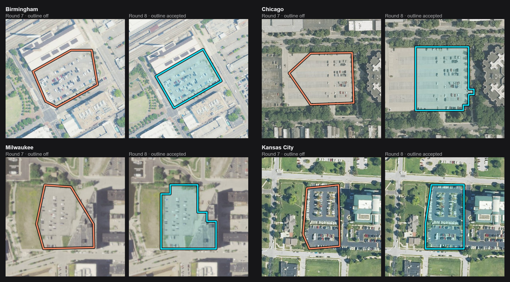

Urban research project
A map of how much downtown land U.S. cities give to surface parking, measured lot by lot from open data. Each lot is also screened as a possible redevelopment candidate.
Scroll or press Enter
Method
Downtown is where jobs are most concentrated. Jobs per census block come from the U.S. Census Bureau's LODES 8 data (workplace area characteristics, all jobs; 2023, or 2021 for Michigan). Each block's jobs go to a 250 m grid cell, and each cell's density is the mean of its 3 × 3 neighbourhood in jobs per acre.
Downtown is the connected group of cells with at least 25 jobs per acre that contains the densest cell within 3 km of city hall; enclosed gaps are filled. That densest cell is the downtown core used in Question 2. Exception: New York uses all of Manhattan, with its core at Grand Central.
amenity=parking with parking=surface or no parking type. Multi-storey and rooftop garages are shown in grey and not counted; underground and street parking are excluded.| Check | Default threshold (adjustable on the map) | Source |
|---|---|---|
| Size | Lot ≥ 1.5 acres | OSM |
| Near the core | Lot centre ≤ 0.5 mile from the downtown core | LODES + OSM |
| Transit access | Any stop ≤ 0.25 mile (or rail only) | OSM |
| Dense surroundings | Building coverage within 0.25 mile, excluding the lot, above the downtown median | OSM buildings |
| Zoning | Not verified in this version | — |
The score is the number of the four checks a lot passes. A lot is listed when it passes every check that is switched on. These are screening results; they do not say a lot can or should be redeveloped.
| Round | Proposals | Real lots | Outline fits | Main change |
|---|---|---|---|---|
| 1 | 467 | 43% | – | Model trained on OSM lots only |
| 2 | 450 | 61%* | – | Retrained on round-1 answers |
| 3 | 190 | 53% | – | Stricter confidence, oriented outlines |
| 4 | 250 | 80% | – | Building footprints as negatives (rooftops) |
| 5 | 51 | 76% | – | Industrial and rail land as negatives |
| 6 | 74 | 87% | 58% | Edge-weighted loss; outlines cut back at streets and buildings |
| 7 | 300 | 94% | 61% | Near-infrared tree removal; right-angle outlines |
| 8 | 300 | 92% | 60%† | Strict review; rectilinear 79%, rectangles 100%, diagonal cuts 38% |
Real lots = share of answered proposals that were surface parking. Outline fits = share of real lots whose outline the reviewer accepted (asked from round 6). * visible outlines only. † strict standard; of 118 lots whose outline had been rejected before, 56 were accepted after re-fitting. The final model drops diagonal cuts and keeps rectangles and right-angle shapes.

The review tool is public: review/ shows the latest proposals on aerial imagery with Yes / Outline off / No buttons (answers stay in your browser).
python/fetch_data.py re-downloads LODES and OSM; python/build_data.py computes every figure and writes data/manifest.json (counts, totals and SHA-256 of each file). Build 2026-11-24.
Limitations
Mapped surface lots per square mile of downtown, lowest first. The lowest quarter (excluding Manhattan) is marked as possible under-mapping.
About
American downtowns devote a large amount of central land to surface parking. This project measures that land in major U.S. downtowns and screens individual lots as candidates for future redevelopment, to give city building a direction backed by evidence.
Download the city summary (CSV) · Data manifest
Build 2026-11-24 · Lots fetched 2026-11-18 to 2026-11-22